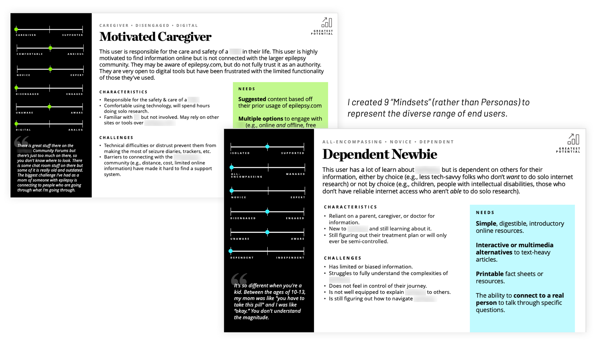
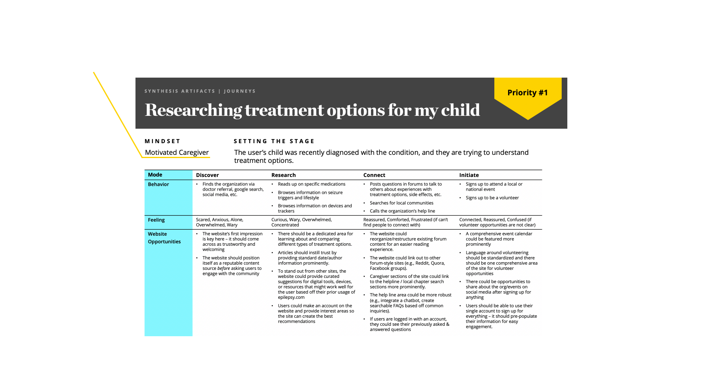

<!DOCTYPE html>
<html lang="en">

<head>
	<title>Emily Porat | Health Nonprofit Discovery</title>
	<link rel="stylesheet" type="text/css" href="styles/global.css">
	<link rel="stylesheet" type="text/css" href="styles/global-mobile.css">
	<link rel="stylesheet" type="text/css" href="styles/nav.css">
	<link rel="stylesheet" type="text/css" href="styles/projects.css">
	<script src="https://ajax.googleapis.com/ajax/libs/jquery/1.9.1/jquery.min.js"></script>
	<link rel="icon" type="image/x-icon" href="pics/favicon.svg"/>
	<!-- Icons -->
	<script defer src="https://use.fontawesome.com/releases/v5.13.0/js/all.js"></script>
	<script defer src="https://use.fontawesome.com/releases/v5.13.0/js/v4-shims.js"></script>
	<!-- Global site tag (gtag.js) - Google Analytics -->
	<script async src="https://www.googletagmanager.com/gtag/js?id=UA-119412150-1"></script>
	<script>
		window.dataLayer = window.dataLayer || [];
		function gtag(){dataLayer.push(arguments);}
		gtag('js', new Date());

		gtag('config', 'UA-119412150-1');

      // load other reused files
      $(function() {
      	$('#nav').load('http://emilyporat.com/nav.html');
      	$('#footer').load('http://emilyporat.com/footer.html');
      });
  </script>
</head>

</html>
<body class="preload">
	<meta name="viewport" content="width=device-width">
	<div id="nav"></div>
	<div id="arrow-up" onclick="slideUp()"><i class="fa fa-angle-up"></i></div>	

<!-- 	<div id="modal_background">
		<div id="prompt" class="pw_prompt">
			<h3>Health Nonprofit Discovery</h3>
			<p>👋 Hey there! I can't talk about this project publicly, so shoot me an <a href="mailto:emporat@gmail.com" target="_blank">email</a> if you'd like to learn more.</p>
			<label>Password:</label>
			<input id="pw_prompt_input1" type="password"></input>
			<button class="secondary-btn" onclick="checkPassword()">Submit</button>
		</div>
	</div> -->

	<div class="full-width" style="background-color: var(--purple);">
		<div class="title-wrapper animate-reveal animate-first">
			<div class="title">
				<div>
					<h4>2021 • Deloitte Digital • Health</h4>
					<h1 style="color: black">Health Nonprofit Discovery</h1>
				</div>
			</div>
		</div> 

		
	</div>


	<div class="panel context">
		<div class="context-summary">
			<h2>Project Overview</h2>

			<h3>
				This client's website has a wealth of information, but users struggle to find what they need and tend to abandon the site quickly. Additionally, the organization is still struggling to reach a large segment of their target audience: individuals living with a particular neurological disorder who want to learn about the condition or get involved with the community.
			</h3>
			
			<div class="space"></div>
			
			<h4>Approach</h4>
			<p>
				Our team evaluated the client's digital footprint from a UX, content, and data perspective with the goals of 1) understanding why users can't find what they need and 2) providing strategic recommendations to improve the overarching user experience.
			</p>
			
			<div class="space"></div>

			<h4>Outcome</h4>
			<p>
				We delivered a comprehensive report that included all our stakeholder and user research findings, synthesis artifacts (Modes & Mindsets and Journey Maps) and outputs from collaborative Product Visioning + Roadmapping sessions.
			</p>

		</div>

		<div class="context-specifics">
			<h4>Team</h4> 
			<div class="context-description"><p>Me, Junior Designer, Product Manager, Content Strategist, Data Strategists, Engagement Manager</p></div>

			<h4>Responsibilities</h4> 
			<div class="context-description"><p>I led the UX workstream with minimal support from a senior designer. I presented all design findings to the client and mentored a junior designer.</p></div>

			<h4>Role</h4>
			<div class="context-description"><p>I led the UX workstream with minimal support from a senior designer. I presented all design findings to the client and mentored a junior designer.</p></div>

			<h4>Tools</h4>
			<div class="context-description"><p>Mural, PPT</p></div>
			
			<h4>Length</h4>
			<div class="context-description"><p>3 months</p></div>


		</div>
	</div>

	<div class="full-width-mid-page">
		<div class="panel dark" style="background-color: var(--purple);">
			<div style="z-index: 2; padding: 10%; position: absolute; width: -webkit-fill-available; top: 50%; -ms-transform: translateY(-50%); transform: translateY(-50%);">
				<h4>Research Objective</h4>
				<h2 style="color: black">Understand why people navigate to the site, what information they are interested in finding, and why they eventually leave.</h2>				
			</div>
			
		</div>
	</div>


	<div class="panel" id="Component Audit">
		<h2 class="body right">Process</h2>
			<div class="body right">
				<h3>We had 12 weeks and a client with a large appetite for interviews. I owned the following activities:</h3>
				<ul>
					<li>Heuristic Evaluation - Usability analysis of key pages on the client's website.</li>
					<li>Stakeholder Research - Guided conversations with (17 members of) internal leadership and (11) external partners to understand organizational goals, priorities, and challenges.</li>
					<li>User Research - Guided conversations and usability testing sessions with (16) end users to understand their lived experiences and approach to using the website.</li>
					<li>Synthesis - Affinity diagramming to pull out key themes</li>
					<li>Modest & Mindsets + Journey Maps - Approach + experience driven models that will help us understand user needs and prioritize features.</li>
				</ul>
			</div>
	</div>

	<div class="panel" id="What We Learned">
		<h2 class="body right">What We Learned</h2>
			<div class="body right">
				<h3>These were are overarching takeaways from all our research activities:</h3>
				<ol>
					<li>Usability issues stem from organizational issues</li>
					<li>Information overload hinders understandability and findability</li>
					<li>To engage, users need to trust the organization</li>
					<li>There is no “one size fits all” solution for improving reach and engagement</li>
				</ol>

				<div class="space"></div>
			</div>
	</div>


	<div class="full-width-mid-page" style="margin-bottom: 0">
		<div class="panel dark" style="text-align: left;">
			<div class="mid-panel-text">
				<h3>1. Usability issues stem from organizational issues</h3>
				<ul>
					<li>As the organization has grown, its website has not effectively scaled with it.</li> 
					<li>Siloed systems and unclear strategy have prevented departments from forming effective content and data governance processes.</li>
					<li>This trickles down into every aspect of the end-user web experience, from information overload to the lack of engagement and personalization strategy.</li>
				</ul>
			</div>
			
		</div>
	</div>

	<div class="full-width-mid-page" style="margin-bottom: 0">
		<div class="panel dark" style="background-color: white; color: black; text-align: left">
			<div class="mid-panel-text">
				<h3>2. Information overload hinders understandability and findability</h3>
				<ul>
					<li>The Information Architecture, navigation components, and Calls to Action are visually confusing and do not match user expectations.</li> 
					<li>There are many inaccessible components across the site (inadequate color contrast or missing labels).</li> 
					<li>Combined with the vast amount of information, the confusing structural organization of the site hinders users’ ability to find what they need efficiently.</li>
				</ul>
			</div>
			
		</div>
	</div>

	<div class="full-width-mid-page" style="margin-bottom: 0">
		<div class="panel dark" style="text-align: left;">
			<div class="mid-panel-text">
				<h3>3. To engage, users need to trust the organization</h3>
				<ul>
					<li>Many end users experience feeling isolated, overwhelmed, and frustrated during their diagnosis process.</li> 
					<li>Most users want to learn about the basics of this health topic, treatment options, and first aid from a science-backed, up-to-date, reliable source.</li>
					<li>Users who are unfamiliar with the org need to build trust in the organization before committing to getting involved with their time, money, or other resources.</li>
				</ul>
			</div>
			
		</div>
	</div>

	<div class="full-width-mid-page" style="margin-bottom: 0">
		<div class="panel dark" style="background-color: white; color: black; text-align: left">
			<div class="mid-panel-text">
				<h3>4. There is no “one size fits all” solution for improving reach and engagement</h3>
				<ul>
					<li>Getting diagnosed with and treating with this condition is highly personal, variable, and based on one’s access to specialized healthcare, background, trust in doctors, etc.</li> 
					<li>It’s important to acknowledge the inherent health disparities that come with privilege (or lack thereof) – those who need the organization the most may never get engaged due to access barriers and lack of awareness.</li> 
					<li>That's why it was so important to go past demographic-based Personas and delve into highly granular Mindsets, based off characteristic and attributes.</li>
				</ul>
			</div>
			
		</div>
	</div>

	<div class="panel" id="Component Audit">
		<h2 class="body right">Our Recommendations</h2>
			<div class="body right">
				<h3>To enable the client to employ nuanced personalization strategies, I created nuanced models - Modes, Mindsets, and Journeys - that provide insight on the characteristics, behaviors, priorities beyond demographics.</h3>

				<div class="space"></div>

				<h4>Modes</h4>
				<p>Behaviors or tasks. Modes outline what people do throughout their journey with their condition.</p>

				<div class="space"></div>

				<h4>Mindsets</h4>
				<p>Characteristics or attributes. Mindsets help us understand how people experience their journey with their condition.</p>

				<div class="space"></div>

				<h4>Journeys</h4>
				<p>The experience of a mindset within various modes. By overlaying a mindset onto a mode, or several modes, we can identify the user’s perspective and needs in a journey.</p>

				<div class="short-divider"></div>

				<p>I created 9 Mindsets and 11 Modes. To narrow in on priorities, we had the client select their top 3 mindsets that they <i>must</i> serve with their website. I created corresponding journeys for those 3 mindsets that.</p>
			</div>
	</div>

	<div class="full-width-mid-page">
		<div class="panel dark" style="text-align: left;">
			<div class="mid-panel-text">
				<h3>Motivated Caregiver Journey</h3>
				<ul>
					<li>The “Motivated Caregiver” mindset is responsible for the care and safety of a child who has the disorder our client’s website aims to educate folks about. This user is highly motivated to find information online but is not connected with the larger community.</li> 
					<li>The client identified this Mindset as their #1 priority to reach on their website.</li>
					<li>Contextualizing individual behavior and feelings helped us recommend more tailored opportunities to improve the website, such as positioning itself as a reputable content source <i>before</i> asking users to engage with the community or donate.</li>
					<li>These opportunities ultimately served as inputs to our Product Roadmap session with the client.</li>
				</ul>
			</div>
			
		</div>
	</div>

	<div class="panel" id="Component Audit">
		<h2 class="body right">Design Principles</h2>
			<div class="body right">
				<h3>Along with identifying specific features and improvement opportunities, I developed a list of design principles for the client to employ during any future redesign effort:</h3>

				<div class="space"></div>

				<h4>Accessible</h4>
				<p>The website will provide content that is universally easy to understand and find and features that are easy to use, regardless of user ability or background.</p>

				<div class="space"></div>

				<h4>Personalized</h4>
				<p>The website will leverage the research we have done on user journeys as the organization works on leveraging behavioral data to feed personalized content to users throughout their journey.</p>

				<div class="space"></div>

				<h4>Person (with condition)-Centric</h4>
				<p>The website will center around the experience of people with the condition. It aims to support and connect them and their caregivers before any other group.</p>

				<div class="space"></div>

				<h4>Trustworthy</h4>
				<p>The website will instill trust in its users by presenting fact-based, accurate, updated information and clearly communicating their mission and brand.</p>

			</div>
	</div>

	<div class="panel" id="Outcome">
		<h2 class="body right">Outcome</h2>
		<div class="body right">
            <h3>The synthesis models, design principles, and the org's new and improved product vision + prioritized backlog we delivered will help the client turn our research into action.</h3>

            <div class="space"></div>

            <h4>Takeaways</h4>
            <ul>
            	<li>On a personal note, this was my first time identifying that my team was under-staffed (I was drowning trying to prep, lead, and transcribe notes for ~50 interviews), requesting (and receiving!) support, and ultimately managing someone junior to me.</li> 
            	<li>I had to figure out how to let go some of my control and trust my mentee to deliver. I had to figure out how to effectively delegate and help us both grow -- like overcoming the desire to re-do work myself rather than provide feedback.</li>
            </ul>

            <div class="space"></div>

            <div style="padding: 5%; background-color: var(--lightpink)">
            	<h4>Testimonials</h4>		
            	<div class="last"><div class="short-divider"></div></div>
            	<p>"I feel like our website is akin to us being dropped in the Amazon rainforest and you are providing us the GPS to get out" <i>-Client, re: Heuristic Evaluation & Stakeholder Research</i></p>

            	<div class="space"></div>

            	<p>"This here really helps me get an understanding of the resources we need and what we need to focus on when we do the redesign. When we look at the user experience, moving the site from informational to educational. This is really really good information" <i>-Client, re: Modes & Mindsets</i></p>
        	</div> 
    	</div>
    </div>

	  	
  	<div id="footer"></div>
  	</meta>
  </body>

  <script src="js/general.js"></script>

</html>